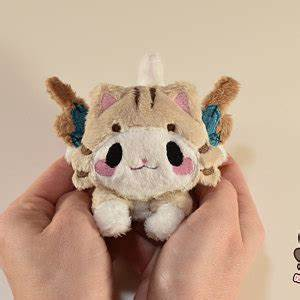
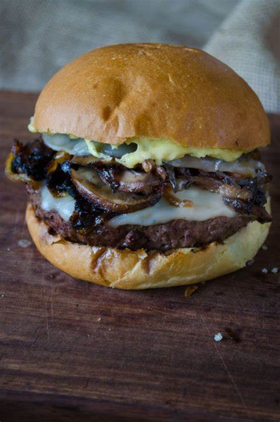

hello, my name is kate and i am 13 years old. my birthday is april 19 and and i go to bowman school. some of my hobbies include drawing, sewing, and cooking, and ihave honed and enjoyed this skills since i was small. when i'm older i'd love to be a social worker and live in the same place i was born and raised, sacramento. i love dogs and i hope im able to have one in my future apartment building (you can see it in the top left in the image above, the small light brown and white dual buildings!) :)
-why i love to draw-
i have been drawing ever since i was able to pick up a pencil, and i loved to draw naturescapes as a kid. now, i draw anthropormorphic animals. honestly, i wouldn't trade my journey in art for the world. that feeling of creating something, something beautiful, gives you a huge seratonin boost, to be honest. i started with a pencil and paper, and later, my finger on my ipad in a cheap drawing program, and now, a drawing tablet with the a program called krita. i even get payed to draw! i have internet accounts where i sell commissions and character designs. it's very fun to watch your improvment over the years and i will never stop doing what i love.
-why sewing is one of my favorite hobbies-
again, sewing is something i have enjoyed since i was little. my mom taught me simple stitches, like the blanket and straight stitch, when i was six. i hadn't practiced for quite a few years after that, but i've recently started learning new skills and revisiting my love for creation. i love to sew pillows, blankets, and most importantly, plushies. i make small, cute plushies of different animals. it's a very helpful and applicable skill, expecially when a curtain needs fixing or one of my siblings' plushies tears. i'm still a beginner but i hope, in time, i can exponentionally improve my skills and begin to sew more complex creations.

how to create a plushie
first, you basically have to make a sculpture out of upholstery foam of your chosen pose of the plushie. you should make this as simple as possible if you want an easier time sewing this. remember to make indents for the eyes, claws, nose, etc.
next, your going to want to outline the markings of the character onto the foam. for example, if your plushie is of a spotted dog, outline the spots with a sharpie onto the foam sculpture. you can also draw on the eye shapes, such as the pupil and chosen colors.
now, your going to cover the entire sculpture with duct tape. make sure you use small strips to cover the eyes and nose, and make sure it looks exactly like the sculpture underneath, with duct tape over it. preserve all small details in this process.
redraw the markings onto the tape. cut all the tape off in an organized fashion, because wherever you cut the the tape is where your seams will be. cut out markings seperatly.
next, use the pieces of tape like a stencil, laying it on top of fabric and cutting the fabric. sew all of the peices together, but make sure to leave a hole at the stomach, and other places like the paws and tail.
finally, using the holes left in the fabric, put stuffing in the plushie. sew up all the holes, and boom, you have a plushie :)
-why i love to cook-
i have been learning to cook for about three years now. i always cook dinner with my dad. i can make easier things by myself, such as spaghetti and meatballs, teriyaki chicken, sauteed brussel sprouts, fried garlic asparagus, and sushi. The meatballs are super fun to make, because you mix spicy and regular sausage meat (the spiciness is toned down my the regular sausagse meat) and add diced garlic and onions, a variety of flavorful herbs, some flour, and olive oil. you first have to cook them in a cast iron pan (best pan for cooking of all time, trust me) and then bake them in the oven for all of the flavors to ferment in their own juices. I help my dad with more complex meals, such as wagyu steak, mashed potatoes (it's harder than it looks to make), homeade sauteed mushroom hamburgers, fried, breaded cod, and japanese soy sauce salmon. Like drawing, spending a lot of time and work to create something that looks and tastes good is a fantastic feeling. plus, you can enjoy it yourself!

-some more info about me-
i have two siblings, my sister is nine and my brother is three.
i live in two houses, my mom's and dad's. Two christmases!
i have moved ten times in my entire life, through sacramento, rocklin, roseville, folsom, el dorado hills, and auburn.
i own a crested gecko named peanut and a dog named pickle.